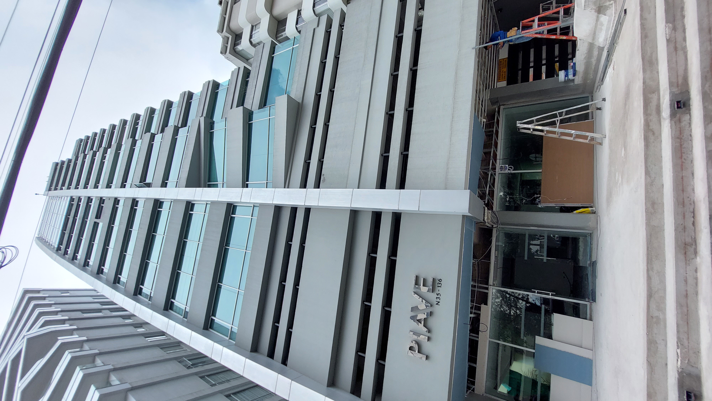
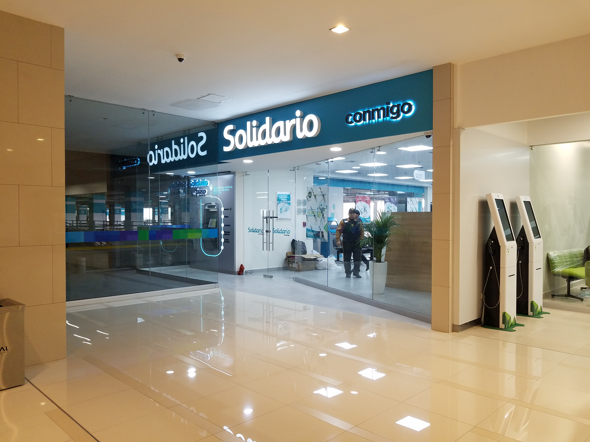
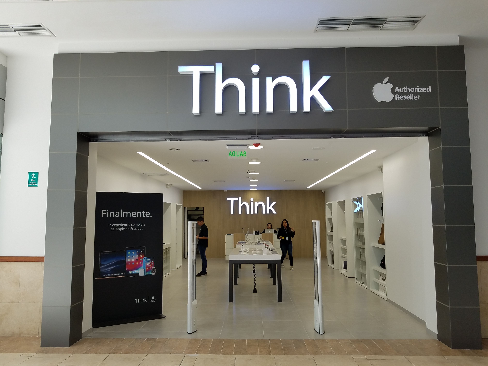

Casa Moderna
Diseño contemporáneo con espacios amplios y ventilación natural.

Oficinas Sustentables
Edificio con enfoque ecológico y eficiencia energética.

Residencial Alto Norte
Complejo de viviendas multifamiliares con áreas comunes verdes.

Centro Cultural Urbano
Espacio para eventos culturales y educativos, diseño abierto y flexible.